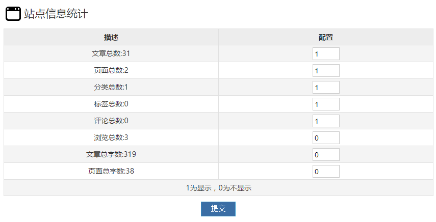
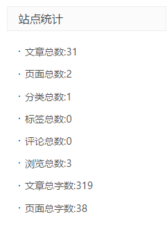

Z-Blog插件：站点信息统计
在系统原有的站点信息的基础上，增加了文章总字数和页面总字数统计；可自定义显示条目。

后台配置页面，1为显示，0为不显示，提交后保存，属性同其它系统模块。

前台显示效果会受到主题样式影响。
偶然想到要统计一下自己博客上文章的总字数，几经辗转，还是新建一个插件，开始看着官方文档，试图实现这个功能。
这是smallyu尝试开发的第一个zblog插件。
插件目录使用系统默认的结构，插件嵌入页include.php和插件管理页main.php。
经过一整天+的探索时间，smallyu渐渐明白了zblog插件的运行机制，最终实现了包括但不限于文章总字数统计的功能。
因为之前smallyu就受限于系统自带的站点信息不能定制化显示，于是这次在插件上添加了这样的功能。
也因为smallyu比较懒，可能代码的实现形式比较low，也没有考虑插件给系统性能带来的影响，如果有机会，也许smallyu会重构这个插件的代码。
同时因为zblog后台并不支持直接提交插件到官方审核，然后smallyu对这个插件也非常没有信心，不认为能够通过审核，就不掺和了。
在插件嵌入页include.php，一共挂载了5个接口，当这些接口事件发生时，模块内容就会被更新（但前台页面需要重新编译）。
function ActivePlugin_SiteInfoCount() {
Add_Filter_Plugin('Filter_Plugin_Zbp_BuildTemplate','updateSIC'); // 模板重新编译接口
Add_Filter_Plugin('Filter_Plugin_PostArticle_Succeed','updateSIC'); // 文章编辑成功接口
Add_Filter_Plugin('Filter_Plugin_DelArticle_Succeed','updateSIC'); // 文章删除成功接口
Add_Filter_Plugin('Filter_Plugin_PostPage_Succeed','updateSIC'); // 页面编辑成功接口
Add_Filter_Plugin('Filter_Plugin_DelPage_Succeed','updateSIC'); // 页面删除成功接口
}插件的ID定义为SiteInfoCount，简写为SIC。官方定义了插件接口的挂载函数ActivePlugin_ID，在该函数里可以使用Add_Filter_Plugin函数挂载系统接口。
当文章或页面被编辑，统计字数就会发生改变，所以在这些事件发生时，需要更新模块内容，这里定义更新模块内容的函数为updateSIC，也就是接管系统接口之后会被执行的函数。
function updateSIC() {
global $zbp;
$config = configInit();
if(isset($zbp->modulesbyfilename['SICMoudle'])){
$zbp->modulesbyfilename['SICMoudle']->Content = cttBycof($config);
}
$zbp->AddBuildModule('SICMoudle', 'updateSIC');
}这是updateSIC函数的内容。先声明使用全局变量$zbp，然后获取配置信息到变量$config，其中configInit函数是自定义的函数。if语句判断模块是否存在，如果存在则更改模块内容。最后面的语句可能是用于执行更新，samllyu并没有完全了解zblog的函数。
理论上更新模块有两种方式，一种是if语句内的样子，直接更改模块内容，另一种是使用下面的AddBuildMoudle函数执行更新模块的操作，函数内的两个参数分别表示要更新的模块是执行更新的用户函数。
smallyu懒得测试模块到底是怎样更新的了，就把两句都写上，反正程序可以正常执行……即使是更新了两次模块，也并不会给系统带来太大额外开销。
function configInit($config = array()){
global $zbp;
$configFileName = "config.sic";
// 文件不存在、没有参数
if(!is_file($configFileName) && count($config) == 0) {
$config = array(1, 2, 3, 4, 5, 6, 7, 8);
configInput($config);
}
// 文件存在
if(is_file($configFileName)) {
// 有参数
if(count($config) != 0) {
configInput($config);
} else {
// 没有参数，读取文件
$configText = file_get_contents($zbp->host."zb_users/plugin/SiteInfoCount/".$configFileName);
$config = explode("|", $configText);
}
}
return $config;
}这是上面用到的configInit函数。函数接收一个数组类型的参数，用于处理插件管理页面提交并需要保存的配置。
没错，配置信息是写入到文件里的，读取分别使用explode和implode将字符串分割为数组。
至于为什么，smallyu之前不知道zblog系统提供了选项机制，可以使用类似$zbp->Config("ID")->test的形式储存数据，然后就没有改。虽然代码量不大，但要把数据从文件储存全部换成使用选项机制储存，也相当于重构整个插件了。
文件储存也并不影响使用，就是看起来新手一点。
其它使用到的函数还有：
moudleInit(); // 初始化模块，也就是新建模块，函数内配置了模块的一些信息 configInput(); // 细化的配置写入函数，在postInit函数里调用 cttBycof(); // 根据config检出content，接收数组参数 postInit(); // 处理提交的配置信息
每个函数的代码量都不大。其中站点信息截取了ModuleBuilder类的Statistics方法，直接获取到了字符串形式的站点信息。
插件管理页面main.php则只是把数据填充过来，其中也用到了看起来不太好的for循环，还把循环次数写死了，像这样：
// 数组转存
foreach($config as $value) {
$config[$value] = $value;
}
// 获得显示数组
for($i = 1; $i <=8; $i++) {
$cofValue[$i] = $config[$i] == $i ? 1 : 0;
}从代码上看，好像不明所以。是的，仅仅过了一个小时，smallyu现在也不明所以……
-------------------------------------
刚才zblog社区有人说插件改0后会出错
应该是全部改0后，会写入配置文件空的内容，然后取配置的时候没能得到参数，程序就报错了，这个bug之前好像也遇到过
全部改0意思就是不显示任何内容，那么……也许可以试着直接把模块撤掉……这样就可以不显示任何内容了
好吧，我懒……得改